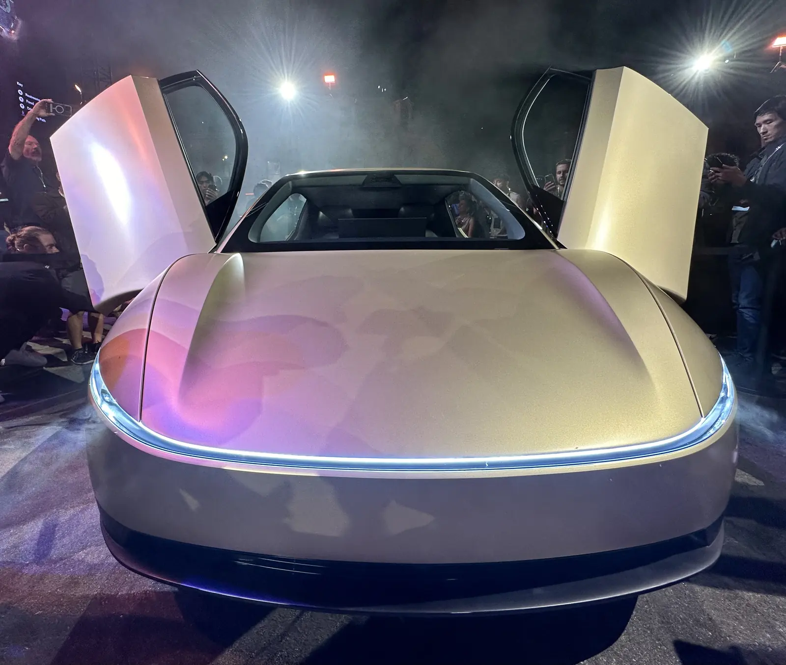
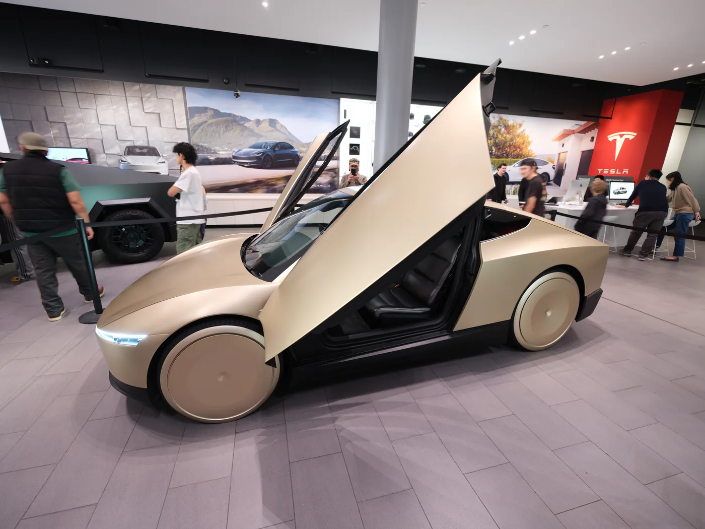
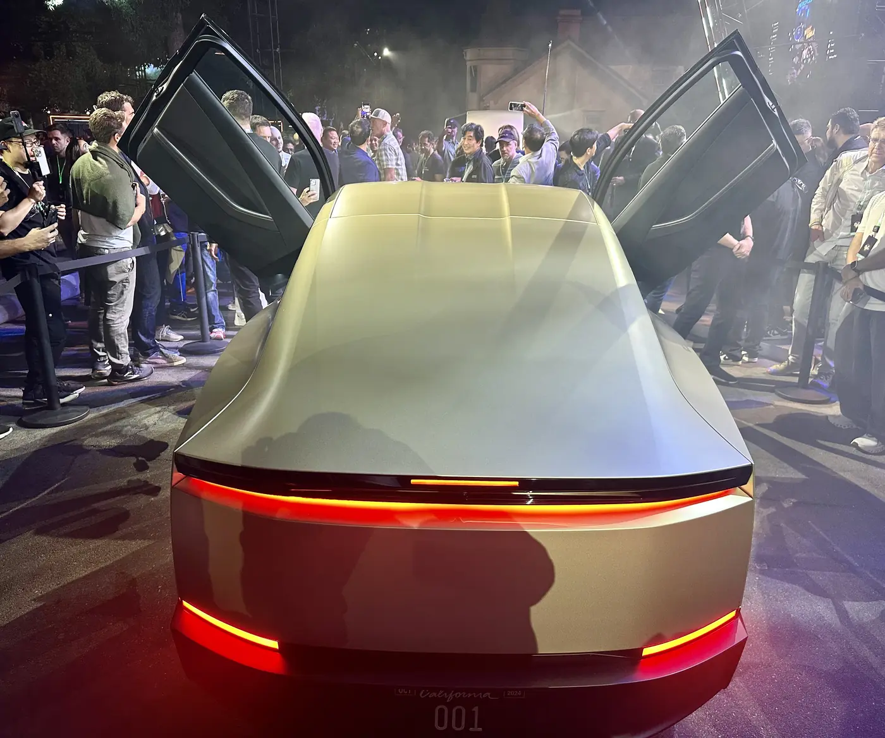
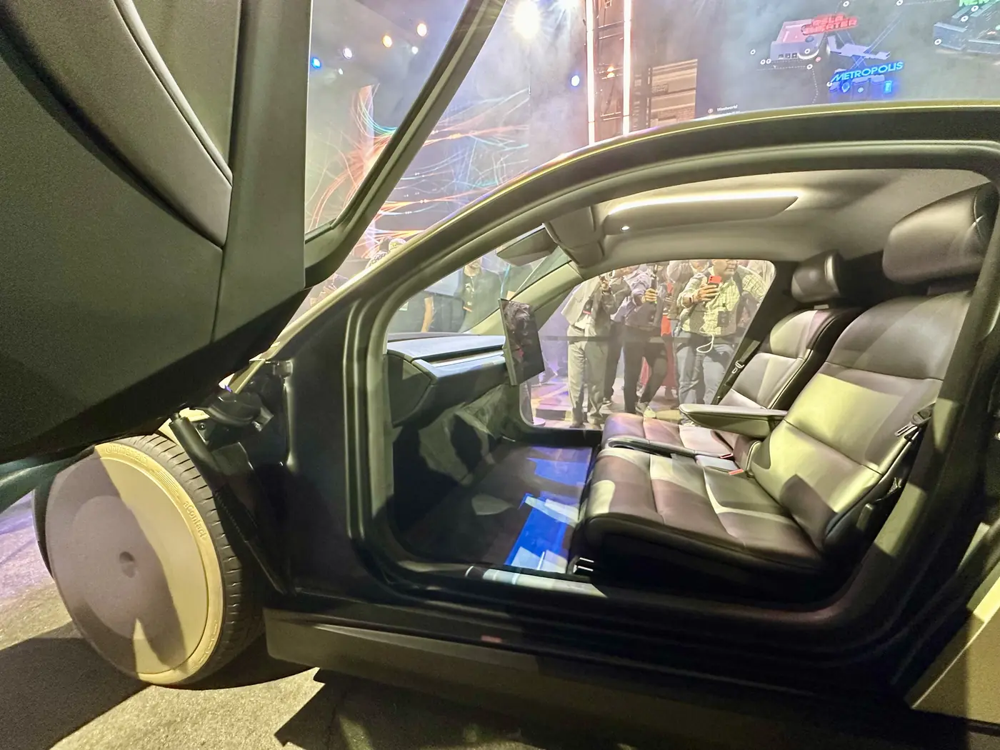

Lake Norman Cybercab
A small Cybercab fleet for the lake.
I want to buy a Cybercab or two and put them to work around Lake Norman. This site is that plan in plain words. It does not book a ride, and it does not collect your email.

The vehicle.
Side, rear, and cabin photographs of the Cybercab. Independent photos with credit. This is what I want to buy and run as a small local fleet, not a pitch for someone else's waitlist.
-

Photo: Dllu / CC BY-SA 4.0 (ShareAlike) -

Photo: Steve Jurvetson / CC BY 2.0 -

Photo: Steve Jurvetson / CC BY 2.0


ShareAlike applies to the Dllu photograph: adaptations of that image stay under CC BY-SA 4.0. The Jurvetson photographs are CC BY 2.0.
Why here
Why the lake.
Lake Norman is where I want the cars to work. The roads and the water already shape how people move.
-
Spread along the water
Coves, peninsulas, and two-lane roads. Dock to dinner, or one shore town to another, still usually means a private car. A small fleet is aimed at those short hops.
-
Visitors who do not know the roads
Boaters, renters, and weekend traffic move through Cornelius, Davidson, Mooresville, Denver, and the western coves. Point-to-point rides fit that pattern better than another rental car for a Saturday.
-
Next to Charlotte, short on transit
The lake towns sit on the edge of a large metro and stay hard to cross without driving. That is the gap a few autonomous cars could cover over time.
What this is.
This is a personal site about buying Cybercabs and building a small Lake Norman fleet when the cars and the rules make that possible. It is not a petition. It is not a count of local interest. It is not a way to reserve a seat.
No rides for hire on this page. No signup. When there is something real to announce, it will show up here.
FAQ
Straight answers.
What is this site?
A personal page about a plan to buy a Cybercab or two and run a small fleet around Lake Norman. It is not a company, not a ride app, and not a way to book a vehicle.
Is this affiliated with Tesla?
No. Lake Norman Cybercab is not affiliated with, endorsed by, or partnered with Tesla, Inc. or any Tesla product. One person built this page for a local fleet idea.
Can I book a ride or join a waitlist?
No. There is no booking, no waitlist, and no email form on this site.
When does service start?
Not promised here. The plan is to buy the cars and build the fleet when that is actually doable. This page will stay honest about that.